Electronic Transformer ACT Documentation
 © 2011 SAS IP, Inc. All
rights reserved. Unauthorized use, distribution or duplication is prohibited.
© 2011 SAS IP, Inc. All
rights reserved. Unauthorized use, distribution or duplication is prohibited.
Copyright and Trademark Information
© 2011 SAS IP, Inc. All rights reserved. Unauthorized use, distribution or duplication is prohibited. ANSYS, ANSYS Workbench, Ansoft, AUTODYN, EKM, Engineering Knowledge Manager, CFX, FLUENT, HFSS and any and all ANSYS, Inc. brand, product, service and feature names, logos and slogans are registered trademarks or trademarks of ANSYS, Inc. or its subsidiaries in the United States or other countries. ICEM CFD is a trademark used by ANSYS, Inc. under license. CFX is a trademark of Sony Corporation in Japan. All other brand, product, service and feature names or trademarks are the property of their respective owners.
Disclaimer Notice
THIS ANSYS SOFTWARE PRODUCT AND PROGRAM DOCUMENTATION INCLUDE TRADE SECRETS AND ARE CONFIDENTIAL AND PROPRIETARY PRODUCTS OF ANSYS, INC., ITS SUBSIDIARIES, OR LICENSORS. The software products and documentation are furnished by ANSYS, Inc., its subsidiaries, or affiliates under a software license agreement that contains provisions concerning non-disclosure, copying, length and nature of use, compliance with exporting laws, warranties, disclaimers, limitations of liability, and remedies, and other provisions. The software products and documentation may be used, disclosed, transferred, or copied only in accordance with the terms and conditions of that software license agreement. ANSYS, Inc. is certified to ISO 9001:2008.
U.S. Government Rights
For U.S. Government the users, except as specifically granted by the ANSYS, Inc. software license agreement, the use, duplication, or disclosure by the United States Government is subject to restrictions stated in the ANSYS, Inc. software license agreement and FAR 12.212 (for non-DOD licenses).
Third-Party Software
See the legal information in the product help files for the complete Legal Notice for ANSYS proprietary software and third-party software. If you are unable to access the Legal Notice, please contact ANSYS, Inc. Published in the U.S.A.
Overview of Electronic Transformer Kit
Primary and Secondary Definition
Overview of Electronic Transformer Kit
The Electronic Transformer ACT is a customized solution for electronic transformers. These devices have a ferrite core (not laminated steel), typically operate in the 100kHz frequency range (with harmonics to low MHz) and have fewer than 200 turns total in the device. The ACT provides an easy-to-use interface to draw the geometry and setup a solution for a transformer or inductor. A database of basic topologies and materials for the commonly used cores is included in the ACT which allows users to choose the required shape and size of the core. In addition users can define their own winding strategy using Winding definition Step (top down or concentric) which enables automatic creation of all winding turns (rectangular or circular).
The ACT allows users to automatically setup an Eddy Current Solution with (or without) a Frequency Sweep Definition. The ACT considers the frequency dependent core permeability and core loss Steinmetz coefficients. The ACT also allows defining matrix connections (series or parallel) if required. This solution process creates a frequency dependent R/L model which can be imported into ANSYS Simplorer as a Maxwell Dynamic Eddy Current component.
This ACT includes three input steps which must be filled out sequentially: Core Definition, Winding Definition and Analysis Setup.
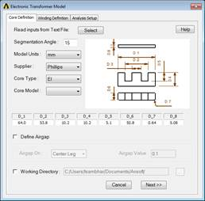 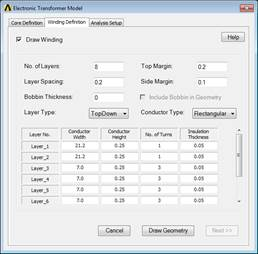 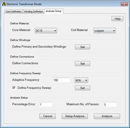
The ACT is built and tested for ANSYS Electromagnetic Suite 18.2, 19.1 and higher versions.
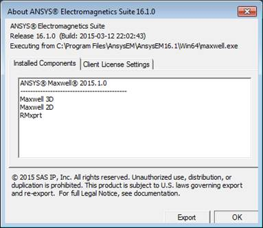
If a model was created previously, a .tab data file can be read in to recreate the same model. Otherwise, the user can skip this button.
All data required by the three input Steps (core definition, winding definition, and analysis setup) is automatically saved in a .tab delimited file in the same directory as the project file with every execution of the script. Once this file is available, users can click on the "Read Settings File" button and browse to the tab file location to it. After selecting, all previous inputs will be automatically added the Steps.
The name of the .tab file is appended with design name. This .tab file can be used for modification or recreating the design in subsequent analysis
Sample of .tab files are available in the script folder under “\CoreUDM\Demo_Planar.tab” and “\CoreUDM\Demo_WireWound.tab”
The angle defined in the textbox will be used as the default segmentation angle for the geometry being created using the ACT. This value is used to segment major curvatures on core and winding. However fillets will not be segmented.
The default value is set to 15 degrees around 360 degree surface. The value of the segmentation angle must be 0 < angle < 20 degrees to avoid poor geometry representation.
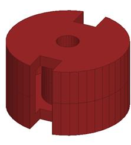 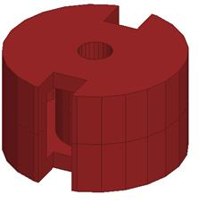
The ACT contains a database of cores from several suppliers. Users can select the core supplier and then select the core type from available 15 topologies. For each core topology, different core models are provided for each supplier. The dimensions of the selected core model will be listed in the table, as shown below. Users can accept the core dimensions as displayed in the Step or manually modify them as per their requirements.
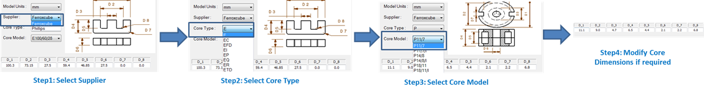
There are 15 core topologies currently supported by the ACT: E, EC, EFD, EI, EP, EQ, ER, ETD, P, PH, PQ, PT, RM, U, UI. These basic topologies are used frequently and are supplied by most of the manufacturers. The description of the dimensions of all these core topologies is given in below images.
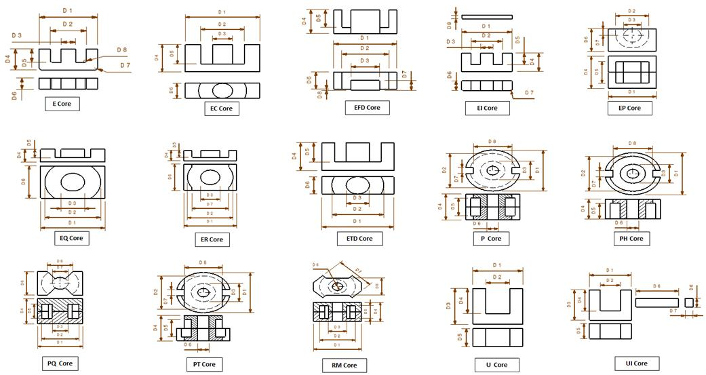
In order to model an airgap in the core, user needs to select the “Define Airgap” checkbox. If this checkbox is checked, user will have option to define airgap on central leg or side legs or both. The user can enter the size of the airgap to be modelled and the specified airgap will be included in core geometry
Note: When an airgap is defined on the “Central Leg” or “Side Legs”, the overall dimensions of core remain unchanged (the airgap is created by removing material from the core at the specified leg.) However when airgap is defined as “Both”, the core halves are moved apart to add airgaps instead of removing material from core. Thus overall height of the core will increase.

Parameters related to winding specification are defined under the Winding Definition tab.
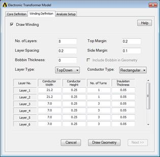 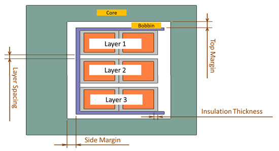
The meaning and specification of all the terms under this tab are described below.
Top and side margins are the spacing between core and the Bobbin. Top margins are spacing at top and bottom of the core while side margin is the spacing along the core center leg. This value can be zero or greater than zero.
Layer spacing is the spacing between two adjacent layers of the core. This value can be zero or greater than zero.
Thickness of the bobbin on which winding is wound. If this value is set to zero, bobbin is not considered. If Bobbin Thickness is more than zero, the value is considered for positioning the winding even if include bobbin is unchecked.
Selecting this checkbox will model the geometry of bobbin. If unchecked, bobbin thickness value is used to determine the position of windings while bobbin is not drawn explicitly.
Total number of layers in the winding. Once the entry for number of layers is done, table below will be modified to facilitate entry of parameters for all layers.
TopDownTopdown Layer arrangement indicates that layers are arranged from top to bottom in the core. Turns in each layer in this arrangement will be added radially outwards. |
ConcentricConcentric Layer arrangement indicates that layers are arranged radially with layer number incremented radially outwards. Turns in each layer in this arrangement will be vertical (top to bottom). |
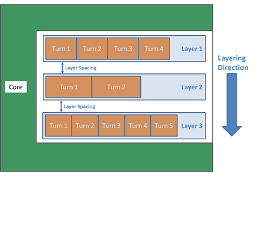 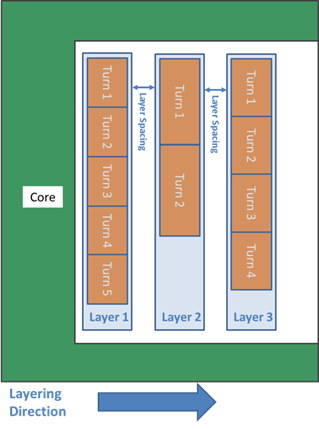
When Conductor type is set to Rectangular, it is considered that cross section of the conductor is rectangular. Rectangular conductor definition will require following inputs
Conductor WidthWidth of the conductor to be specified Conductor HeightHeight of the conductor to be specified Number of TurnsNumber of conductor turns in each layer Insulation ThicknessThickness of the insulation on the conductor. Even though insulation is not modelled geometrically, the value specified for insulation thickness will be considered for modelling location of the turns
|
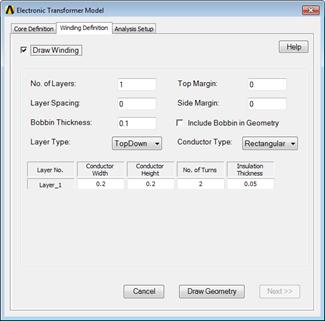 |
When Conductor type is set to Circular, it is considered that the cross section of the conductor is Circular. Circular conductor definition will require following inputs
Conductor DiameterDiameter of the conductor to be specified Number of TurnsNumber of conductor turns in each layer Insulation ThicknessThickness of the insulation on the conductor. Even though insulation is not modelled geometrically, the value specified for insulation thickness will be considered for modelling location of the turns Number of SegmentsThe value specified in this column will be used to segment the circular conductor. The value specified should be greater than 8. Any value less than 8 is not permitted.
|
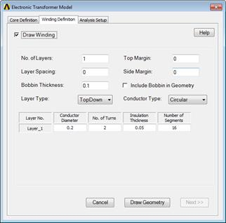 |
When all inputs on the “Winding Definition” Step are completed, the user can click on “Next” button to create the model in Maxwell. This may create a model with overlapping objects, which will need to be corrected. Clicking on “Next” will proceed to the 3rd Step. Clicking on "Exit Wizard" will cancel and close the ACT.
Once the geometry is drawn Analysis Setup Step will be opened.
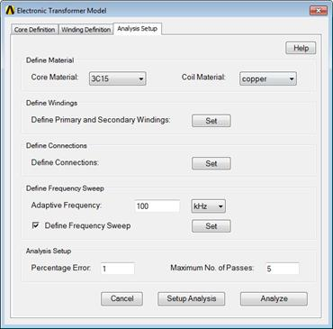
Select the ferrite core material (as listed in CoreData.tab material file) and coil material (copper or aluminum) from the pull down menus.
In order to add a new core material, users can follow below steps
1. Create a tab file for frequency versus permeability for the required core. Sheet Scan option available in Maxwell can help for creation of the tab fil.
2. Name the tab file same as the name of the material to be added
3. Place the tab file in the folder “CoreUDM /MaterialData”
4. Open “matdata.tab” file, which is in the folder “CoreUDM /MaterialData”,in Excel
5. Add a row for the material to be added and specify name and other material properties
6. Save the file with same name.
Once this is done, the material should be available for selection for next run of the ACT
Primary and Secondary Definition
Once all the winding layers are drawn, user needs to define which of the layers correspond to Primary winding and which layers will be considered as secondary winding. The definition of Primary and secondary will be sued to define direction of current. Current Direction in secondary is assigned as opposite to Primary.
All layers listed in the dialog should be defined as either Primary or Secondary. Further operations will be enabled only after all layers are defined as Primary or Secondary.
Once Primary/Secondary definition is complete, the option to define connection will be enabled. This is an optional step which will allow users to define Winding Groups. The result of this operation will be same as the Post-processing operation in Matrix Definition window. The interface allows to group the winding together and also enables users to define name of the groups and number of parallel branches in the group.
The Frequency defined under Adaptive Frequency is sued for solving the fields with Adaptive mesh refinement. It is advisable to define highest frequency of the frequency range to be solved under the adaptive frequency. This ensures that the skin depths are resolved for all the frequency range to be solved.
The checkbox “Define Frequency Sweep” enables to setup a frequency range on which the results need to be computed. After the checkbox is checked, users can click on the button “Set” to define the frequency range to be solved. Users can Define Start and Stop frequency together with number of samples to be solved in that range. Further the sampling method can also be defined as Linear or Logarithmic.
Note: Frequency Sweep will be necessary if user is interested in System Simulation using State Space Model extracted from Maxwell solution.
The details mentioned under this section will be used to determine the level of accuracy required in the simulation.
The Percent Error allows you to control the desired solution accuracy. Smaller values produce more accurate (but slower) solutions.
The Maximum Number of Passes is the maximum number of mesh refinement cycles you would like Maxwell to perform. This value is a stopping criterion for the adaptive solution; if the maximum number of passes has been completed, the adaptive analysis stops even if the Error criterion is not achieved.
When all inputs on the “Analysis” Step are completed, the user can click on “Setup Analysis” to setup the model in Maxwell and close the script. Clicking on “Analyze” will solve Maxwell and close the script. Clicking on “Cancel” will cancel and close the script.